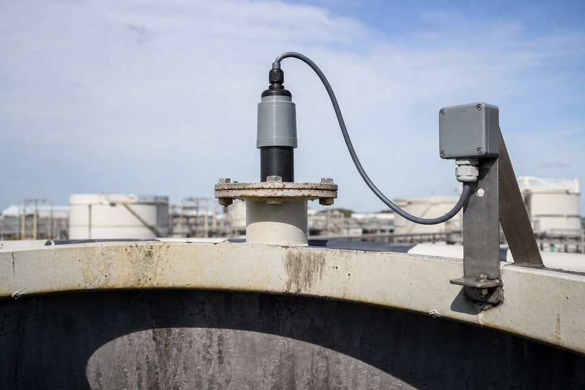

اصل اندازهگیری؛ زمان پرواز صوت
در روش التراسونیک، یک مبدل پیزوالکتریک پالسهای صوتی با فرکانس بالاتر از محدوده شنوایی تولید میکند و به سمت سطح سیال میفرستد. اکوی بازگشته از سطح دریافت شده و زمان رفت و برگشت آن اندازهگیری میشود؛ چون سرعت صوت در محیط مشخص است، فاصله تا سطح محاسبه میگردد. با کم کردن این فاصله از ارتفاع نصب، سطح مخزن به دست میآید. این روش بدون تماس و بدون بخش متحرک است و نصب سادهای دارد؛ به همین دلیل برای مخازن آب، حوضچهها و بسیاری کاربردهای عمومی انتخاب اول محسوب میشود.

جبران دما و اثرات محیطی
سرعت صوت به دمای محیط بین سنسور و سطح بستگی دارد؛ با تغییر دما، سرعت صوت تغییر کرده و بدون جبران، خطای اندازهگیری ایجاد میشود. به همین دلیل ترانسمیترهای مجهز، سنسور دمای داخلی دارند و محاسبه را تصحیح میکنند. ترکیب گاز بالای مخزن نیز بر سرعت صوت اثر میگذارد؛ در مخازنی که فضای بالای آنها گاز متفاوتی دارند، این موضوع باید در انتخاب لحاظ شود. رطوبت و گرد و غبار زیاد نیز میتواند اکو را ضعیف کند و در چنین محیطهایی، نگهداری و تمیزکاری سطح مبدل اهمیت پیدا میکند.
نکات نصب
- زاویه نصب عمود بر سطح؛ پرتو باید عمود بر سطح سیال برخورد کند.
- دوری از ورودی سیال و نقاط اغتشاش.
- نازل کوتاه و بدون لبه؛ نازل بلند اکوی کاذب ایجاد میکند.
- رعایت فاصله از دیواره و موانع داخلی.
- در نظر گرفتن ناحیه کور سنسور در حداکثر سطح مخزن.
التراسونیک در برابر رادار
هر دو فناوری بدون تماساند اما پنجره کاربردشان متفاوت است. التراسونیک اقتصادیتر است و در مخازن باز با شرایط ساده عالی کار میکند؛ اما به کف، بخار غلیظ و تغییرات شدید دما حساس است. رادار تحت تاثیر این عوامل نیست، در دما و فشار بالا کار میکند و پایداری بلندمدت بالاتری دارد؛ بهای آن هزینه بیشتر است. قاعده عملی: برای نقاط عمومی و مخازن باز، التراسونیک با صرفهجویی محسوس کافی است؛ برای نقاط حساس و شرایط سخت، رادار انتخاب مطمئنتری است.
عیبیابی و خطاهای رایج اندازهگیری التراسونیک
ترانسمیترهای التراسونیک در شرایط مناسب بسیار قابل اتکا هستند؛ اما ماهیت مبتنی بر صوت، آنها را به چند عامل محیطی حساس میکند که بیشتر مشکلات میدانی از همانها ناشی میشود. اولین عامل، کف و فوم روی سطح است؛ فوم انرژی صوت را جذب میکند و اکوی سطح را ضعیف یا حذف مینماید، به طوری که دستگاه ممکن است اکوی کاذب از مانع دیگر را به اشتباه جایگزین کند. اگر فوم در فرایند شما دائمی است، فناوری التراسونیک انتخاب مناسبی نیست. دوم، بخار و غبار غلیظ بالای سطح است؛ لایههای متراکم بخار یا گرد و غبار، مسیر صوت را تضعیف و سرعت آن را تغییر میدهند و قرائت را ناپایدار میکنند. سوم، موانع داخل مسیر پرتو است؛ نردبان، لولههای ورودی، همزن یا براکتهای داخلی، اکوی کاذب تولید میکنند. راهحل، انتخاب محل نصب مناسب در زمان طراحی و در صورت لزوم، تنظیم پنجره اکوی دستگاه برای حذف اکوهای ثابت شناختهشده است. چهارم، میعان روی سطح مبدع است؛ قطرات یا فیلم رطوبت روی سطح فرستنده، انتقال و دریافت صوت را مختل میکنند و خود را با قرائتهای پرشی یا افت سیگنال نشان میدهند؛ طراحی با زاویه مناسب و در صورت نیاز پوششهای دافع رطوبت، این مشکل را کم میکند. پنجم، فاصله کور است؛ هر ترانسمیتر التراسونیک یک محدوده نزدیک به خود دارد که در آن قادر به اندازهگیری نیست و اگر سطح مخزن به این ناحیه برسد، قرائت نامعتبر میشود؛ این محدوده باید در انتخاب رنج دستگاه لحاظ گردد. ششم، تغییرات شدید دمای هوای داخل مخزن است که بدون جبران مناسب، خطای سرعت صوت ایجاد میکند. در عیبیابی عملی، اگر قرائت ناگهانی به مقدار نامعقولی پرش میکند، ابتدا وضعیت سطح و وجود فوم، سپس اکوهای کاذب از موانع و در مرحله آخر سلامت مبدع و تنظیمات دستگاه را بررسی کنید.
جمعبندی
ترانسمیتر التراسونیک سادهترین و اقتصادیترین روش اندازهگیری سطح بدون تماس است. با جبران دما، نصب عمود و دور از اغتشاش و شناخت محدودیتها در برابر کف و بخار، این فناوری سالها اندازهگیری قابل اتکا ارائه میدهد و برای بسیاری مخازن عمومی، بهترین نسبت هزینه به کارایی را دارد.
سوالات رایج
ترانسمیتر التراسونیک چگونه کار میکند؟
یک پالس صوتی به سمت سطح سیال فرستاده میشود و زمان رفت و برگشت اکو اندازهگیری میگردد؛ با دانستن سرعت صوت، فاصله تا سطح و در نتیجه سطح مخزن محاسبه میشود.
سرعت صوت چرا مهم است؟
چون محاسبه فاصله بر اساس سرعت صوت انجام میشود و سرعت صوت با دما و ترکیب گاز بالای مخزن تغییر میکند. سنسورهای مجهز به جبران دما این اثر را تصحیح میکنند.
چه عواملی خوانش را مختل میکنند؟
کف و بخار غلیظ روی سطح، اغتشاش شدید، موانع در مسیر پرتو و نصب نامناسب روی نازل بلند یا نزدیک دیواره. این موارد باید در جایابی سنسور دیده شوند.
التراسونیک کجا به رادار ترجیح داده میشود؟
در مخازن باز و شرایط ساده با بودجه محدود؛ رادار برای شرایط سختتر، دما و فشار بالا و پایداری بلندمدت انتخاب میشود اما هزینه بیشتری دارد.
مطالب مرتبط
با ذکر ابعاد مخزن، سیال و شرایط فرایند، ترانسمیتر التراسونیک متناسب از برندهای معتبر عرضه میشود.
مشاهده صفحه محصول ← ثبت RFQ همین محصولتامین این تجهیزات را به پیشرو تجهیز فرتاک بسپارید
شرکت پیشرو تجهیز فرتاک تامینکننده تخصصی تجهیزات صنعتی برای پروژههای نفت، گاز، پتروشیمی، فولاد و نیروگاهی است. برای دریافت پیشنهاد فنی و قیمت، استعلام (RFQ) خود را ثبت کنید تا کارشناسان مهندسی فروش در کوتاهترین زمان پاسخ دهند.
- تامین ابزار دقیقترانسمیترها و آنالایزرهای برندهای معتبر
- تامین تجهیزات صنایع نفت و گازپکیج مواد مطابق وندورلیست